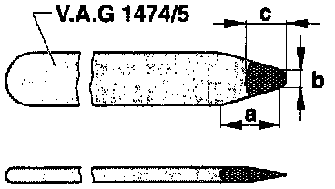

Operation CHARM
: Car repair manuals for everyone.
Home
>>
Volkswagen
>>
1997
>>
GTI (1H1) V6-2.8L (AAA)
>>
Repair and Diagnosis
>>
Brakes and Traction Control
>>
Hydraulic System
>>
Wheel Cylinder
>>
Tools and Equipment
Wheel Cylinder: Tools and Equipment

-
Reshape wedge point size in area -a-
Width -b- =
6 mm (1/4 inch)
-
Reshape wedge point to length -c-
Length -c- =
10 mm (3/8 inch)
-
Remove any burrs from point of modified wedge